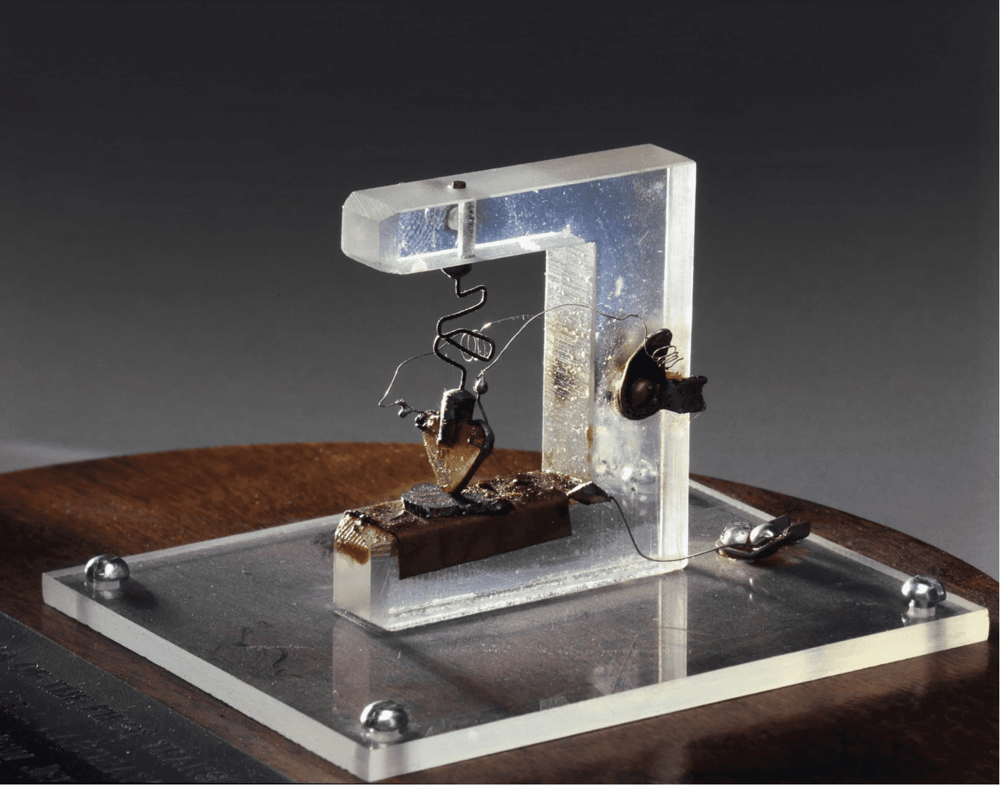

.svg)

.svg)
История создания транзисторов - устройства, перевернувшего мир
Мы живем в эпоху, сущность которой определяют цифровые технологии и электроника. И краеугольный камень этого мира — миниатюрная микросхема, состоящая из кремниевых транзисторов. А они, в свою очередь, были бы невозможны без полупроводников.
Микросхемы, транзисторы и полупроводники можно найти почти в любом устройстве сложнее вентилятора, начиная со стиральных машин и заканчивая космическими спутниками и аппаратами ИВЛ. Поэтому освоение полупроводников можно без сомнений назвать главным изобретением XX века. Рассказываем историю рождения технологии, сформировавшей нашу реальность.
Что такое полупроводники и почему они наше всё
Для начала немного физики. Полупроводники — это вещества с особыми свойствами проводимости электричества. На этих свойствах основана вся современная электроника — именно они позволяют модулировать, усиливать и направлять ток и обмениваться электросигналами.
Но сам по себе полупроводник — это всего лишь материал. Для того, чтобы использовать его особенности, инженеры разработали транзисторы — сложные миниатюрные устройства, управляющие током и преобразующие его. Главный элемент транзистора — p-n-переход (positive-negative), в одном монокристалле сформированы две области, отличающиеся механизмом электропроводности. А из комбинаций транзисторов состоят микросхемы, которые используют обмен сигналами между ними для вычислений.
Чаще всего в качестве полупроводников для транзисторов используют кремний — это самый удобный, дешевый и универсальный материал. Кремний для изготовления полупроводника должен быть очень чистым и состоять из одного кристалла. Поэтому материал для полупроводников выращивают в лабораториях, «вытягивая» расплавленное вещество.
Свойствами полупроводников обладают многие другие элементы и вещества, например германий, но в подавляющем большинстве случаев сегодня используется кремний. Для того, чтобы усилить особые свойства полупроводников, они обогащаются добавками — например, мышьяком. Добавление примесей — отдельная непростая задача, которую можно решить множеством способов.
Первые догадки
История покорения полупроводников началась в 1833 году, когда физик Майкл Фарадей заметил, что электропроводность сульфида серебра повышается при нагревании. Другие соли и металлы реагируют обратным образом — чем выше температура, тем хуже через них проходит ток. Через много лет Антуан Анри Беккерель заметил, что некоторые материалы меняют электропроводность под воздействием света.
В 1874 году Карл Фердинанд Браун обнаружил, что некоторые вещества изменяют электрическое сопротивление в зависимости от направления, величины и продолжительности тока. Это открытие привело к разработке технологии «выпрямления», то есть преобразования переменного тока в постоянный — именно такой механизм лежит в основании радиотехники. Примерно в то же время Артур Шустер сообщил о схожих результатах исследований контакта между проводами из чистой и окисленной меди — последняя здесь действует как полупроводник.
По сути, четыре эти открытия описывают основные свойства полупроводников. Но сущность этих свойств осталась для физиков XIX века загадкой — тогдашняя наука была не способна объяснить их. Исследовать полупроводники удалось лишь в 1920-1940-х годах, когда ученые смогли объяснить их устройство материалов на атомарном уровне.
Германий меняет мир
Электроника, то есть совокупность технологий, позволяющих использовать электрический ток для вычислений и обработки информации, появилась еще в 1930-х годах. До середины 1950-х основным компонентом электронного оборудования были вакуумные лампы. Именно их использовали первые компьютеры, созданные в годы Второй Мировой войны для военных целей.
Главным недостатком вакуумных ламп была чрезвычайная громоздкость. Вакуумная лампа примерно такого же размера, как лампочка накаливания. А транзистор, который выполняет ту же роль, крошечный: первая в истории серийная интегральная микросхема Intel 4004 была выпущена в 1971 году. Ламповые компьютеры занимали по несколько комнат, но действовали очень медленно.
Кроме того, лампы потребляли гигантские объемы энергии и выделяли огромное количество тепла. Для того, чтобы электроника развивалась дальше, нужно было создать гораздо более экономичный электронный компонент — то есть транзистор.
Первый патент на концепцию полупроводникового транзистора, в котором использовался сульфид меди, еще в 1926 году подал польско-американский изобретатель Юлиус Лилиенфельд. Однако ему так и не удалось воплотить свое гипотетическое изобретение в жизнь — идея была реализована лишь 20 лет спустя.
Транзистор создали ученые из лабораторий корпорации Bell. Они начали изучать потенциал p-n перехода полупроводников еще в середине 1930-х. Однако из-за Второй Мировой войны почти всем передовым американским физикам пришлось пойти работать на армейские проекты, где разрабатывали радары и ядерное оружие. Исследования остановились на несколько лет, и возобновились после разгрома стран Оси.
Первый рабочий транзистор был создан в конце 1947 года. В качестве полупроводника в нем был использован германий — его научились очищать и выращивать раньше, чем кремний. Транзистор разработала группа инженеров во главе с Уильямом Шокли, Уолтером Браттейном и Джоном Бардином. В 1950 году Шокли получил патент на оригинальный транзистор, а Браттейн и Бардин — на его трехэлектродную версию. В 1956 году все трое были награждены Нобелевской премией по физике. Бардин стал единственным человеком, получившим эту премию дважды — в 1972 году он вместе с двумя другими физиками был награжден ей за разработку теории сверхпроводимости.
Первый транзистор
Открытие транзисторов породило совершенно новую индустрию, причем главным их покупателем стали военные, а чуть позже и НАСА. Лидером отрасли, помимо Bell, стала компания Philco, транзисторы которой первые годы были даже быстрее. Но уже в 1955 году группа ученых из Bell совершила еще одну мини-революцию, создав диффузионный транзистор — он отличался особым способом добавления усиливающих примесей в вещество-полупроводник.
Военные требуют кремния
Германиевые транзисторы стали огромным прорывом. Тем не менее, у них было как минимум два существенных недостатка — они сильно нагревались и не могли работать на высоких температурах. Забегая вперед, отметим, что и для современных интегральных микросхем германий не подходит. Физики знали, что гораздо более удобным полупроводником является кремний. Об этом было известно и военным, которые требовали разработать универсальные и жаропрочные кремниевые транзисторы.
Квалифицированных ученых в США в те годы было очень мало — с 1946 по 1948 год американские университеты выпустили всего 416 физиков и 378 математиков. Фундаментальная наука в стране как отрасль только зарождалась — до Второй Мировой государство почти не финансировало ученых, и им приходилось заниматься сугубо практическими и быстро коммерциализируемыми исследованиями для нужд промышленности, а почти все прорывные теоретические открытия совершались в Европе. Именно Вторая Мировая война, в начале которой Америка заметно отставала в технологиях от Германии, побудила Вашингтон создать первые федеральные программы поддержки фундаментальных исследований.
Количество ученых в США вскоре возросло во много раз, что быстро сделало их мировым лидером во многих отраслях науки. Однако этот эффект проявился лишь через десятилетие. А в 1950-х инновационными исследованиями могли заниматься всего несколько сотен человек на всю огромную страну. Потеряв группу специалистов, компания могла утратить инновацию Поэтому главным механизмом конкуренции стало переманивание ученых.
В 1952 году компания Texas Instruments «схантила» у Bell химика Гордона Тила. В 1954 году он помог техасским инженерам создать первый кремниевый транзистор. Это открытие стало большим сюрпризом. Тил произвел огромный фурор на одной из научных конференций по радиоэлектронике сухой репликой: «несмотря на то, что коллеги рассказывали вам о безрадостных перспективах кремниевых транзисторов, у меня в кармане лежит несколько таких». А затем показал преимущества своего изобретения, обмокнув усилитель работающего музыкального проигрывателя в масло — при этом музыка не остановилась. Именно этот транзистор можно считать прямым предком подавляющего большинства микросхем, окружающих нас.
Эти новые кремниевые транзисторы от Texas Instruments были адаптированы для использования в военной аппаратуре: бортовых радарах, средствах связи и навигационном оборудовании. К концу 1950-х они сделали Texas Instruments лидером отрасли и главным получателем военных госзаказов в сфере электроники. Очень вовремя — из-за Холодной войны в ВПК потекли огромные деньги. Их продажи выросли с нескольких сотен тысяч долларов в 1954 году до более чем 80 миллионов долларов в 1960 году.
Итог
Изобретение транзисторов это событие, важность которого невозможно переоценить. Это позволило размещать на одном вычислительном чипе миллиарды таких переключателей, сделав прорыв в производительности компьютерной техники. Это позволило проводить вычисления, о которых раньше могли только мечтать. Сложно представить каким был бы мир, если бы не изобретение транзистора.